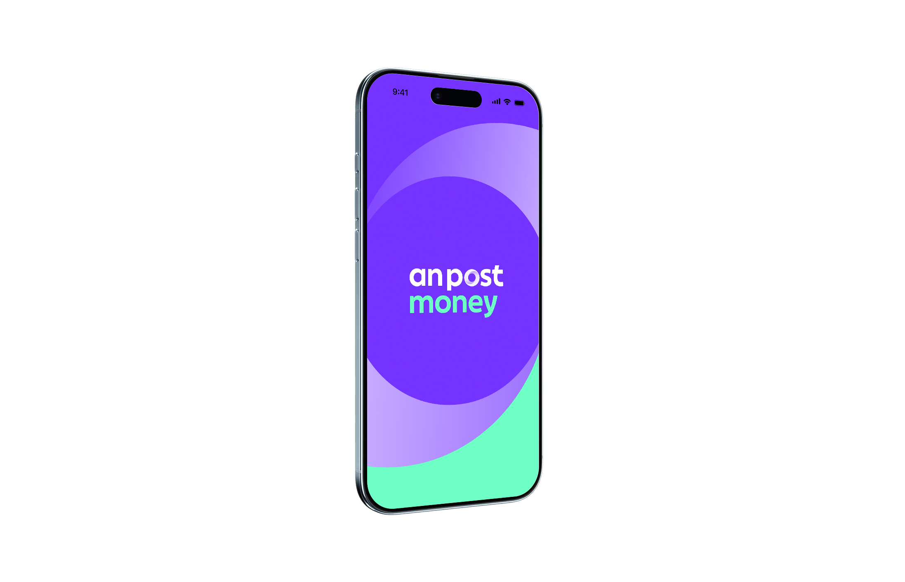
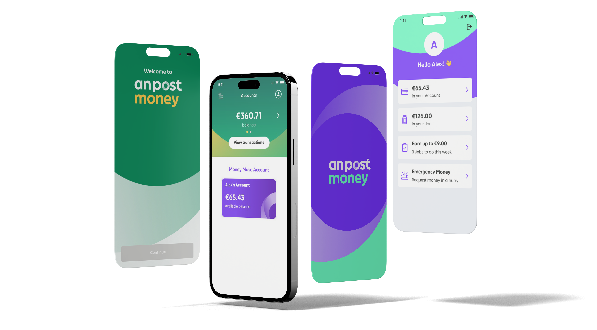
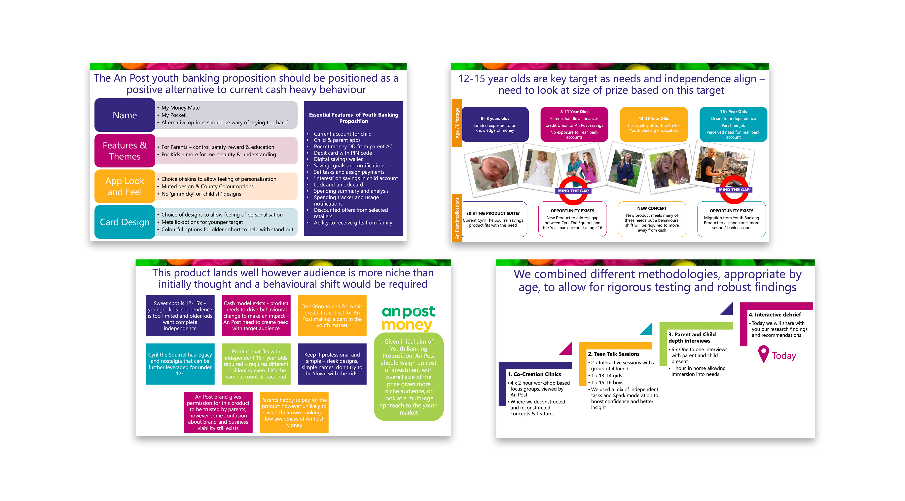
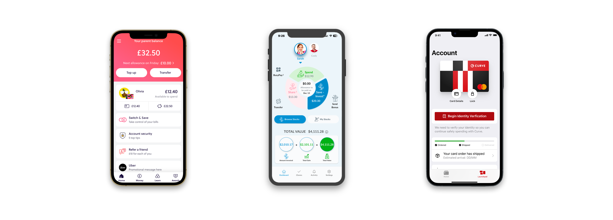
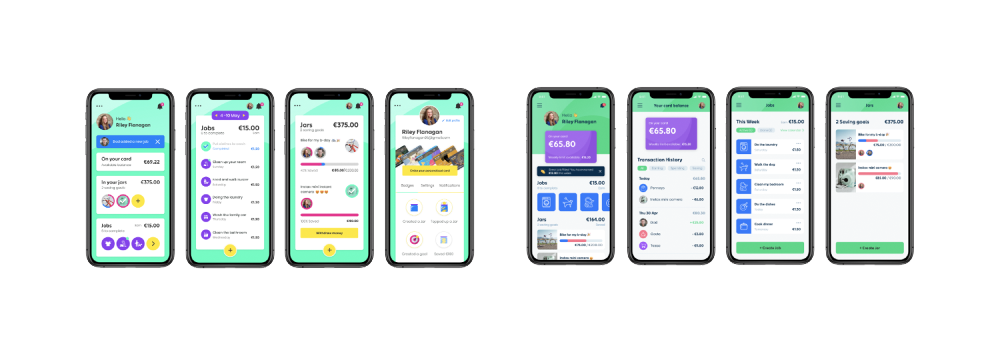
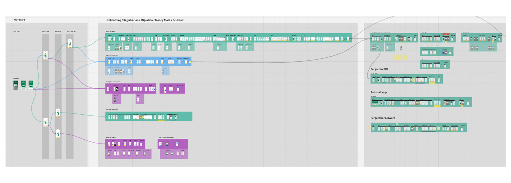
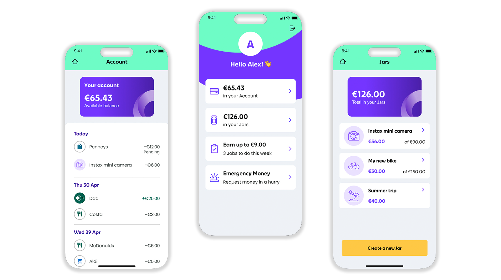

An Post Money

My Role
Tasks
Overview

Problem
Process
User & Behavioural Research

Market & Competitive Analysis

Design Exploration & Rapid Prototyping

Onboarding Journeys & Information Flows

Implementation

Conclusion